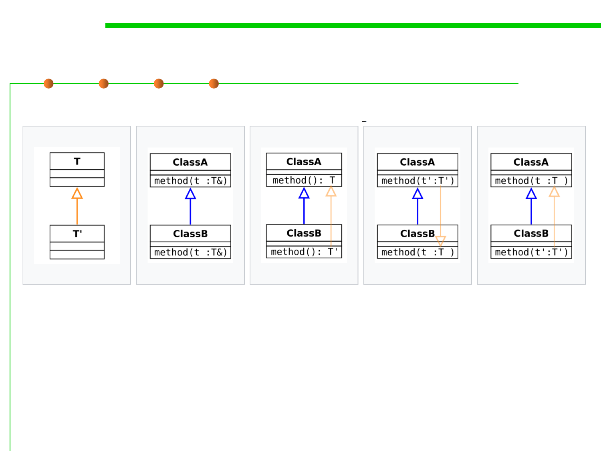

Variance in method overriding
5.2 Construction for Reuse
Subtyping of the
argument/return
type of the
method.
Invariance. The
signature of the
overriding method
is unchanged.
Covariant return
type. The
subtyping relation
is in the same
direction as the
relation between
ClassA and
ClassB.
Contravariant
argument type.
The subtyping
relation is in the
opposite direction
to the relation
between ClassA
and ClassB.
Covariant
argument type.
Not type safe.
https://en.wikipedia.org/wiki/Covariance_and_contravariance_(computer_science)